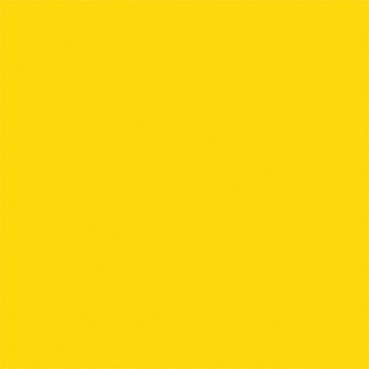

Colores

Existe un contenido simbólico en cada uno de los colores utilizados para la creación de los círculos mágicos.
| Negro | Blanco | Verde |
|---|---|---|
| Relacionado con la tristeza, la muerte, lo profundo, la ignorancia y el misterio. |
 Purificación, iluminación. Es el color de la perfección. De la nada o el todo por hacer. Purificación, iluminación. Es el color de la perfección. De la nada o el todo por hacer. |
Relacionado con la naturaleza, esperanza, crecimiento, felicidad y libertad. |
| Gris | Rojo | Naranja |
| Calma, espera, neutralidad, sabiduría y renovación. |
Energía pura vital, pasión y sensualidad. |
Energía, dinamismo, ternura, valor y ambición. |
| Amarillo | Azul | |
| Simpatía, color del sol y la luz. | Calma, paciencia y felicidad, armonía, amistad, fidelidad, serenidad, sosiego, la calma y la higiene. |